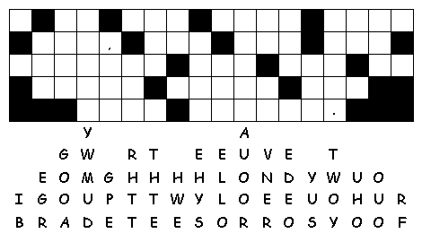
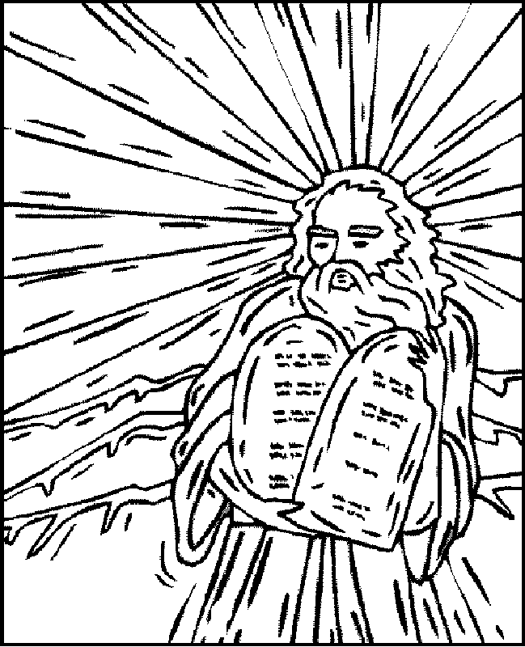
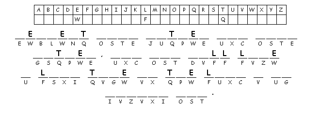

This week's lessons: Exodus 20:1-17, Psalm 19, 1 Corinthians 1:18-25, John 2:13-22
This
week's lessons: Exodus
20:1-17, Psalm
19, 1
Corinthians 1:18-25, John
2:13-22
Elementary School Pew-work
 |
 |
|
 |
|
1. Who does God say he is?
___________________________________________________________________________
2. Where did God bring his people from?
___________________________________________________________________________
3. What will happen to us if we love God and obey his laws?
___________________________________________________________________________
4. Who does the Sabbath day belong to?
___________________________________________________________________________
Questions taken from Sunday School Lessons; http://www.sundayschoollessons.com/
Next week: Numbers 21:4-9, Psalm 107:1-3, 17-22, Ephesians 2:1-10, John 3:14-21